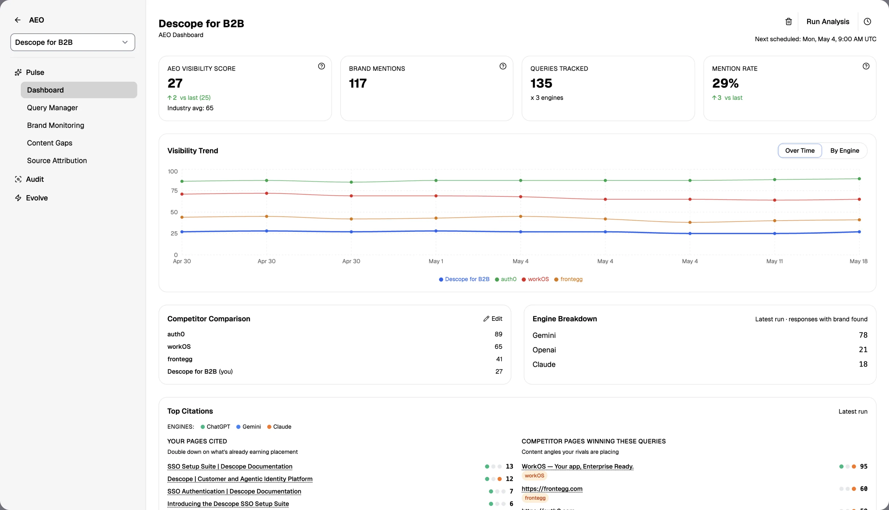
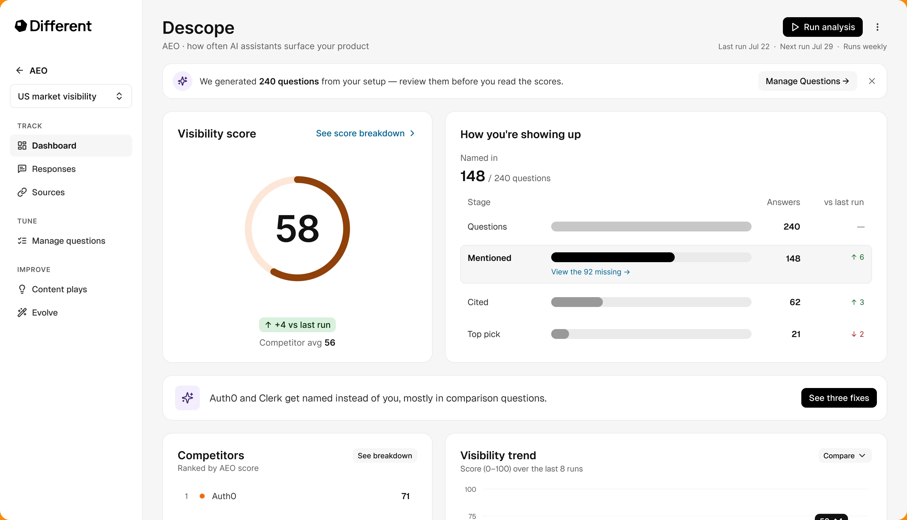
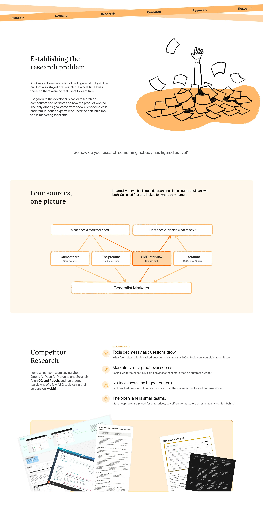
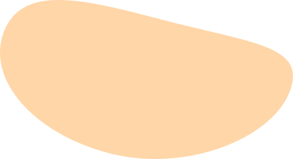
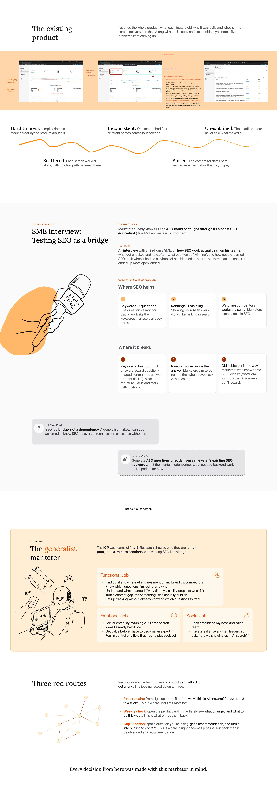
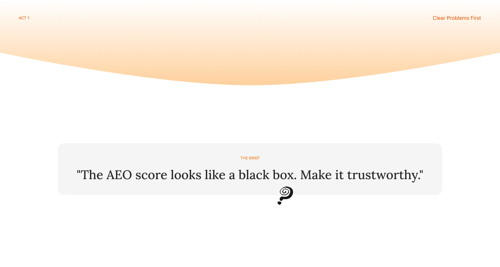
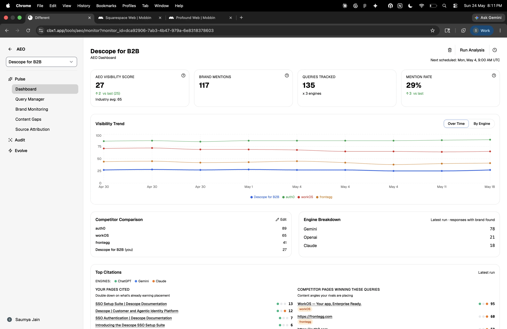
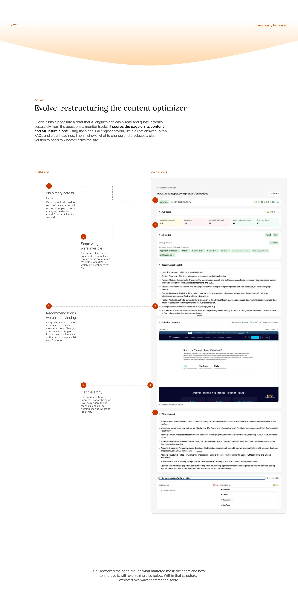
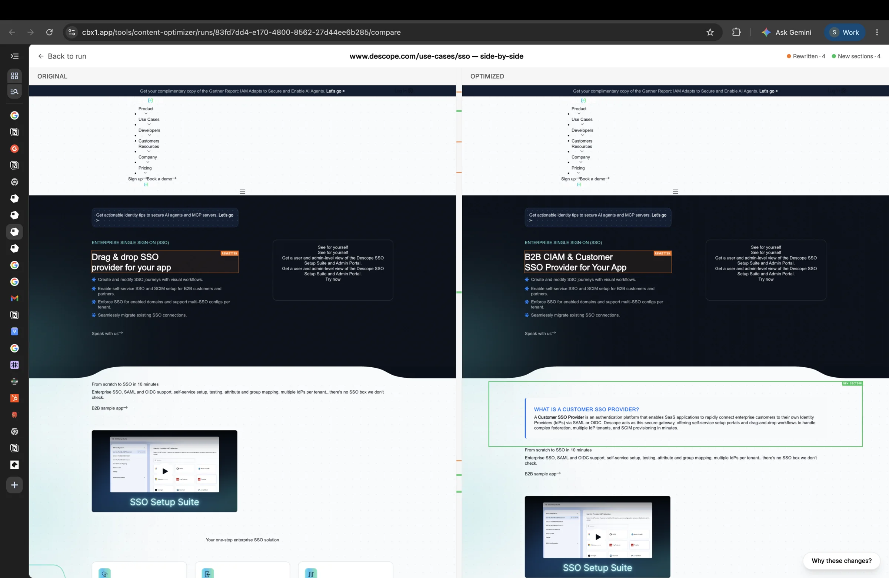

You clicked faster than I could type.
Here's what I've got so far, or head back to see what's actually ready →

Where it lands


Just a sneak peek. Let me walk you through how I got here.


I read the Princeton GEO study, the first large research paper on how AI engines choose their sources, alongside industry guides like Evertune's beginner's guide to GEO.
-
Clarity beats keywords
In the GEO study, keyword stuffing barely moved the needle. Adding expert quotes, statistics and cited sources did, lifting a page's visibility in AI answers by up to about 40%.
-
Depth beats breadth
AI engines lean towards sources that cover one topic thoroughly, not ones that skim many.
-
Fresh content wins
Many engines favour recently updated pages, so publishing once and forgetting it doesn't work anymore.


Where I started
I first wanted to understand why the score felt like a black box. A heuristic evaluation would have found polish issues, but not that. So I checked the page against the questions a marketer comes with.
Derived from the marketer's jobs to be done, narrowed to what a dashboard can answer.
Hover to see

What's driving my visibility?
The breakdown was calculated but never shown.
Am I visible?
The score had no scale. The marketer couldn't tell if it was good.
How often does each engine mention me?
The numbers were split across the page. The marketer had to join them up.
Am I improving over time?
It showed the score going up or down, but not why.
Why are competitors ahead of me?
Just a list of scores. Nothing on why rivals were ahead.
Where exactly am I being cited?
Top Citations listed the exact pages being cited.
Two more problems came from the screen itself.
Three cards, one equation
Mentions, questions tracked and mention rate looked like separate facts, but they were one sum (117 ÷(135*3) = 29%). The maths was invisible.
The benchmark was buried
The industry average sat in tiny grey text under the score, even though it's what gives the score meaning.


Showstopper
The side-by-side diff was Evolve's showpiece.
It kept what the page meant and only changed how it was said (tighter phrasing, clearer structure, FAQs section etc.), so AI engines could read it easily.
It also showed the rewrite in the brand’s own design, so a marketer could see exactly how the new page would look.
In demo calls, it was the moment clients lit up, so two of my first three layouts were built around it.
A. Diff Aggressive
B. Results Page First
C. Hybrid
The diff is the centre of gravity: review changes side by side first.
Score and change → actions → diagnostics → inputs. The diff is one click away.
A persistent score strip with an embedded diff preview, the full diff one click away.
Clients loved the diff in demo calls, but in practice, they rarely used it. The real work happened on the results page.

Taking a closer look at some widgets
Do AI engines talk about us at all,
and where do we lose?
A brand can be named, cited, or picked as the top answer, and each stage needs a different fix:
- Not mentioned: AI engines can’t read the brand’s content, or there’s none on the topic.
- Mentioned, not cited: its pages aren’t trusted or clear enough to quote.
- Cited, not top pick: a competitor’s content is stronger.
A single score would hide this. The funnel shows where the brand loses most, and so what work comes next. The comparison with the last run closes the AEO loop: publish, wait for the next run, check.
How you're showing up
Named in
148 / 240 questions
Fix this leak
Questions → Mentioned
The Banner
Numbers show what’s wrong, not why. Small teams rarely have an AEO specialist, so the banner names the pattern and points to the next step. It names competitors because that’s how marketers think, and how they explain problems to stakeholders.
The Drawer
Fixes are ordered by cause, since new content on pages AI engines can’t read changes nothing. Each fix shows its reach, which answers “why this first?”, and links to where the work happens, so the gap → action route no longer stops at a recommendation.
Why are we missing,
and what do we do about it?
Unblock AI crawlers
2 comparison pages on your site return errors to AI crawlers.
Cover missing topics
Your site has no pages on passwordless auth or CIAM.
Get mentioned on trusted sites
Auth0 and Clerk appear on review sites and roundups; you don't.
Auth0 and Clerk get named instead of you, mostly in comparison questions.
See three fixesHow does AI feel about our brand?
- Being named isn't always a win. A negative mention is visible but losing, so sentiment is shown separately.
- AI answers vary from run to run, so a single week can easily mislead. The trend shows the real direction over time.
Response trend
Jun 3 – Jul 22 · 56 responses per run
Jul 22
Positive26
Neutral10
Negative7
Not named13
Not named dropped from 37 to 13 responses since Jun 3
Positive responses grew from 2 to 26 over 8 runs